eng\ Ahmed ghoneim
يعني ايه web ? www => World Wide Web -- مين فتح فيس بوك او يوتيوب او اي موقع من الكمبيوتر او اللاب توب او حتى من جوجل كروم الي على الموبيل ؟ ---
ال web هوا الي بيخليك تتصفح وتشوف المواقع على الانترنت يعني تفتح فيس بوك او انستجرام او موقع رياضه وهكذا
هتيجي تقولي ازاي يا بشمهندس ؟ هوا مش الي بيعمل كده دا النت ؟
فا هنيجي هنا لسؤال مهم جدا : ايه الفرق بين الانترنت و الويب ؟
الانترنت : الشبكة الضخمه الي بتربط أجهزة الكمبيوتر في العالم كله ببعض او الموبيل يعني انت قاعد في بيتكوا بتبعت رساله لصاحبك او انتي قاعده في بيتكوا بتبعتي رساله لصحبتك فكده اجهزتكوا مربتبطه ببعضها
يبقا كده ايه هوا الانترنت ؟
احفظها وجاوب مع نفسك
برافو عليك
تمام كده خلصنا الانترنت -
نيجي بقا للويب -- ايه هوا الويب ؟ هوا جزء من الإنترنت، وبيتكون من المواقع او صفحات الويب اللي بنشوفها في المتصفح بتاعنا زي اليوم السابع واي موقع تاني بنفتحه
بص كده على اول ويب بيج في التاريخ اتعملت سنة 1989 عن طريق واحد اسمه (تيم برنرو ليي) : tim berners lee
 طب ازاي الراجل عمل الصفحه دي ؟
الراجل دا عمل لغه اسمها html : hyper text markup language
ومن خلالها قدر يطلع الشكل الي انتا شايفه دا وسماها وورلد وايد ويب يعني الراجل دا الكبير بتاع المجال هوا الي حط اول طوبه في عالم الويب او انشاء المواقع
هيا الي بتحط الاساسيات اوقات فيه حجات في الكود بتقدم فبنبطل نستخدمها واوقات بيكون فيه حجات جديده تسهل علينا كتابة الكود => w3schools
بعدها بكام سنه جه كام طالب عملوا مشروع تخرج زيكوا كده لما هتعملوا مشاريع في المستقبل وكان اول مره يتعمل موقع فيه صوره كانت طفره ساعتها محدش كان مصدق
mosaic اسمها
طب ازاي الراجل عمل الصفحه دي ؟
الراجل دا عمل لغه اسمها html : hyper text markup language
ومن خلالها قدر يطلع الشكل الي انتا شايفه دا وسماها وورلد وايد ويب يعني الراجل دا الكبير بتاع المجال هوا الي حط اول طوبه في عالم الويب او انشاء المواقع
هيا الي بتحط الاساسيات اوقات فيه حجات في الكود بتقدم فبنبطل نستخدمها واوقات بيكون فيه حجات جديده تسهل علينا كتابة الكود => w3schools
بعدها بكام سنه جه كام طالب عملوا مشروع تخرج زيكوا كده لما هتعملوا مشاريع في المستقبل وكان اول مره يتعمل موقع فيه صوره كانت طفره ساعتها محدش كان مصدق
mosaic اسمها
 وبعد كده جت شركه اسمها
netscape
خدت الطلاب دول بالمشروع بتاعهم وفضلوا يطوروه ويطوروا عالم الويب والبراوزر بتاعهم فضل شغال لغاااية 2007 وبعد كده اتوقف
خدت مشروعهم وفضلوا يتطوروا لغاية ماوصلنا لايامنا دي بالتطور الي احنا فيه
هتيجي تقولي يعني انا بقرأ دا كله ليه ؟ هقولك لازم تعرف الويب كان ايه ووصل لايه دا هيساعدك تفهم الصوره الكامله فهتفهم اكتر
HTML => hyper text markup language لغة تكوين او بناء زي مابتيجي مثلا تبني شقه جديده ايه اول حاجه بتتبني ؟ الطوب الاحمر والاسمنت صح ؟ عندنا هنا بقا دا في مجالنا دا html
**** ودي مش لغة برمجه دي لغة بناااااء او تكويين ******
علشان تشغلها بقا عندك محتاج حاجتين : ايه هما ؟ حد عارف ؟ طبيعي متبقوش عارفين
لازم يكون عندك براوزر او متصفح (1)
لازم يكون عندك برنامج تكتب فيه الكود علشان يبقا موقع بعد كده زي (2)
code editor : notepad -- note++ -- brackets --(vsCode ودا الي هنستخدمه )
ليه vsCode ليه مميزات كتير جدا
مساحته صغيره والتعامل معاه سهل جدا مش بس كده وهتلاقي معظم الناس بتستخدمه وليه مميزات تانيه هنعرفها بعدين
لغة اتش تي ام ال دي (الي هيا لغة تكوين) بتفهم حاجه واحده بس :
html understands : Tags او عناصر
Tags :
1- open closed tag بينهم tag scope : المدي الي بيقع عليه اي تأثير على التاج دا- <p> </p>
ايه الكلام دا ؟ انا مش فاهم اي حاجه يابشمهندس ؟
تعالى افهمك
خلينا نفترض اننا عندنا تاج اسمه محمد ازاي اكتبه ؟ باجي اعمل علامة اصغر من وعلامة اكبر من وبينهم اسم التاج بتاعي
<mohamed>
يعني كده دا الاوبن كلوزد تاج ؟ دي الفاتحه ودي القفله بتوعي ؟ لا
دا كده كله اسمه الاوبن تاج بس هتسألني دلوقتي انا عارف هتقولي امال يهندسة الكلوزد تاج شكله عامل ازاي بقا ؟ هقولك زي الاوبن تاج بالظبط بس الفرق الوحيد اني باجي في الكلوزد تاج
احط في الاول سلاش او شرطه مايله
</mohamed>
عيدها تاني لغاية ما تحفظها
كده احنا قولنا الاوبن كلوزد تاج -
*****************
تاني نوع معانا بقا في التاجز او في العناصر
2- self closed tags مثال : <img src="" alt= "" / >
اسمه سلف كلوزد تاج
دا بيكون العنصر الفتحه في القفله الاتنين مع بعض في نفس الحاجه ومالهوش تاج سكوب او مجال نكتب فيه
هوا قفلته في فتحته
<mohamed /> قبل ماتيجي تقفل التاج بتاعك على طول تحطله سلاش
زي في المثال الي فوق
img دا اسم التاج
هتقولي طب ودا هتعامل معاه ازاي يا هندسه ؟
هقولك دا بياخد حاجه اسمها
attributes : زي مانتا شايف فوق كده في المثال : : src="" دي طريقة كتابته وبياخد جوا علامات التنصيص دي مكان او عنوان يروح يجيب منه الصوره :
هتقولي ايه اتربيوتس دي انا توهت هقولك اتربيوتس دي يعني سمات العنصر حاجه بتوصف العنصر وتتحكم فيه
زي ::
src="" و alt=""
وهكذا وكل واحد بيكون ليه استخدامه
واي حاجه بتتكتب في الفتحة بتاعت العنصر الي هيا
open tag : <mohamed ***** ***** / >
الي بتكون مكان النجوم دي : بيكون اسمها اتربيوتس او سمات العنصر
احفظ النوعين الي فوق دول كويس جدا وافهمم الاول وبعدين ادخل على الجزء الي بعد كده ******
هيا دي التاجز بقا بتعامل بيها علشان اقدر اكتب كود: اتش تي ام ال
***********************************
بصوا كده معايا : المفروض اني وانا شغال دي نصيحه ليكوا خلينا نبتدي صح وعلى نضافه لما تيجي تعمل تاسك او واجب كل تاسك تعمله فولدر لوحده
لما اجي اعمل فايل علشان اكتب فيه الكود بقا هسميه اندكس.اتش تي ام ال بس بالانجليزي طبعا
index.html
عايز تسميه اي حاجه سميه بس المتعارف عليه انه بيكون اسمه اندكس (index السرفر بيقرأ فايل الاندكس دي نقطة البدايه بتاعتي )
هندسه دلوقتي هكتب الكود فين ؟ هنا في البراوزر ؟؟
كليك يمين وافتح بال vscode
*************
تكوين صفحة الاتش تي ام ال
html
*************
<html>
<head>
الاعدادات بتاعت الصفحه و التايتل ولو فيه ملفات سي اس اس خارجيه--
ايه هوا الهيد دا؟
دلوقتي انت لو ماشي في الشارع وحد شافك بيشوف انت بتفكر في ايه ؟ ايه بيدور جوا رأسك ؟ لا طبعا
يبقا الهيد دا مش متشاف اليوزر مبيشوفهوش (ما عدا التايتل)
</head>
<body>
الي بيتكتب هنا هوا الي بيظهر في الصفحه
خلينا ندي نفس المثال الي فوق : لما تكون ماشي في الشارع الي بيشوفك دا بيشوف جسمك بيشوف البودي
body
يعني اي حاجه بتتكتب في البودي اليوزر بيشوفها وبتظهر في البراوزر
</body>
</html>
الشكل اهو :
<html> البداية بتاعت الأب الكبير
<head> البداية بتاعت اول أبن
</head> النهاية بتاعت اول ابن
<body> البداية بتاعت تاني ابن
</body> النهاية بتاعت تاني ابن
</html> النهاية بتاعت الأب الكبير
وبعد كده جت شركه اسمها
netscape
خدت الطلاب دول بالمشروع بتاعهم وفضلوا يطوروه ويطوروا عالم الويب والبراوزر بتاعهم فضل شغال لغاااية 2007 وبعد كده اتوقف
خدت مشروعهم وفضلوا يتطوروا لغاية ماوصلنا لايامنا دي بالتطور الي احنا فيه
هتيجي تقولي يعني انا بقرأ دا كله ليه ؟ هقولك لازم تعرف الويب كان ايه ووصل لايه دا هيساعدك تفهم الصوره الكامله فهتفهم اكتر
HTML => hyper text markup language لغة تكوين او بناء زي مابتيجي مثلا تبني شقه جديده ايه اول حاجه بتتبني ؟ الطوب الاحمر والاسمنت صح ؟ عندنا هنا بقا دا في مجالنا دا html
**** ودي مش لغة برمجه دي لغة بناااااء او تكويين ******
علشان تشغلها بقا عندك محتاج حاجتين : ايه هما ؟ حد عارف ؟ طبيعي متبقوش عارفين
لازم يكون عندك براوزر او متصفح (1)
لازم يكون عندك برنامج تكتب فيه الكود علشان يبقا موقع بعد كده زي (2)
code editor : notepad -- note++ -- brackets --(vsCode ودا الي هنستخدمه )
ليه vsCode ليه مميزات كتير جدا
مساحته صغيره والتعامل معاه سهل جدا مش بس كده وهتلاقي معظم الناس بتستخدمه وليه مميزات تانيه هنعرفها بعدين
لغة اتش تي ام ال دي (الي هيا لغة تكوين) بتفهم حاجه واحده بس :
html understands : Tags او عناصر
Tags :
1- open closed tag بينهم tag scope : المدي الي بيقع عليه اي تأثير على التاج دا- <p> </p>
ايه الكلام دا ؟ انا مش فاهم اي حاجه يابشمهندس ؟
تعالى افهمك
خلينا نفترض اننا عندنا تاج اسمه محمد ازاي اكتبه ؟ باجي اعمل علامة اصغر من وعلامة اكبر من وبينهم اسم التاج بتاعي
<mohamed>
يعني كده دا الاوبن كلوزد تاج ؟ دي الفاتحه ودي القفله بتوعي ؟ لا
دا كده كله اسمه الاوبن تاج بس هتسألني دلوقتي انا عارف هتقولي امال يهندسة الكلوزد تاج شكله عامل ازاي بقا ؟ هقولك زي الاوبن تاج بالظبط بس الفرق الوحيد اني باجي في الكلوزد تاج
احط في الاول سلاش او شرطه مايله
</mohamed>
عيدها تاني لغاية ما تحفظها
كده احنا قولنا الاوبن كلوزد تاج -
*****************
تاني نوع معانا بقا في التاجز او في العناصر
2- self closed tags مثال : <img src="" alt= "" / >
اسمه سلف كلوزد تاج
دا بيكون العنصر الفتحه في القفله الاتنين مع بعض في نفس الحاجه ومالهوش تاج سكوب او مجال نكتب فيه
هوا قفلته في فتحته
<mohamed /> قبل ماتيجي تقفل التاج بتاعك على طول تحطله سلاش
زي في المثال الي فوق
img دا اسم التاج
هتقولي طب ودا هتعامل معاه ازاي يا هندسه ؟
هقولك دا بياخد حاجه اسمها
attributes : زي مانتا شايف فوق كده في المثال : : src="" دي طريقة كتابته وبياخد جوا علامات التنصيص دي مكان او عنوان يروح يجيب منه الصوره :
هتقولي ايه اتربيوتس دي انا توهت هقولك اتربيوتس دي يعني سمات العنصر حاجه بتوصف العنصر وتتحكم فيه
زي ::
src="" و alt=""
وهكذا وكل واحد بيكون ليه استخدامه
واي حاجه بتتكتب في الفتحة بتاعت العنصر الي هيا
open tag : <mohamed ***** ***** / >
الي بتكون مكان النجوم دي : بيكون اسمها اتربيوتس او سمات العنصر
احفظ النوعين الي فوق دول كويس جدا وافهمم الاول وبعدين ادخل على الجزء الي بعد كده ******
هيا دي التاجز بقا بتعامل بيها علشان اقدر اكتب كود: اتش تي ام ال
***********************************
بصوا كده معايا : المفروض اني وانا شغال دي نصيحه ليكوا خلينا نبتدي صح وعلى نضافه لما تيجي تعمل تاسك او واجب كل تاسك تعمله فولدر لوحده
لما اجي اعمل فايل علشان اكتب فيه الكود بقا هسميه اندكس.اتش تي ام ال بس بالانجليزي طبعا
index.html
عايز تسميه اي حاجه سميه بس المتعارف عليه انه بيكون اسمه اندكس (index السرفر بيقرأ فايل الاندكس دي نقطة البدايه بتاعتي )
هندسه دلوقتي هكتب الكود فين ؟ هنا في البراوزر ؟؟
كليك يمين وافتح بال vscode
*************
تكوين صفحة الاتش تي ام ال
html
*************
<html>
<head>
الاعدادات بتاعت الصفحه و التايتل ولو فيه ملفات سي اس اس خارجيه--
ايه هوا الهيد دا؟
دلوقتي انت لو ماشي في الشارع وحد شافك بيشوف انت بتفكر في ايه ؟ ايه بيدور جوا رأسك ؟ لا طبعا
يبقا الهيد دا مش متشاف اليوزر مبيشوفهوش (ما عدا التايتل)
</head>
<body>
الي بيتكتب هنا هوا الي بيظهر في الصفحه
خلينا ندي نفس المثال الي فوق : لما تكون ماشي في الشارع الي بيشوفك دا بيشوف جسمك بيشوف البودي
body
يعني اي حاجه بتتكتب في البودي اليوزر بيشوفها وبتظهر في البراوزر
</body>
</html>
الشكل اهو :
<html> البداية بتاعت الأب الكبير
<head> البداية بتاعت اول أبن
</head> النهاية بتاعت اول ابن
<body> البداية بتاعت تاني ابن
</body> النهاية بتاعت تاني ابن
</html> النهاية بتاعت الأب الكبير
HTML Lists (القوايم)
تخيل إن عندك قائمة تسوق — دي بالظبط وظيفة الـ lists في HTML: ترتيب عناصر متشابهة.
الأنواع الأساسية:
<ul> — unordered list: قائمة بنقاط (bullet). <ul> </ul> غير مرقمه
<ol> — ordered list: قائمة مرقمة. <ol> </ol>
<dl> — description list: للـ "مصطلح — تعريف" <dl> </dl> : <dt> </dt> -- <dd> </dd>
<li> — كل عنصر جوه القايمة. <li> </li>
examples
ul قائمة غير مرتبة
input code :
<ul>
<li>موز</li>
<li>تفاح</li>
<li>عنب</li>
</ul>
output:
*********************
ol قائمة مرقمة
input code :
<ol start="3" reversed>
<li>البند الأول</li>
<li>البند التاني</li>
<li>البند الثالث</li>
</ol>
output
- البند الأول
- البند التاني
- البند الثالث
*********************
dl قائمة وصفية
input code :
<dl>
<dt>HTML</dt>
<dd>لغة لهيكلة صفحات الويب</dd>
<dt>CSS</dt>
<dd>بتتحكم في شكل الصفحات</dd>
</dl>
output
- HTML
- لغة لهيكلة صفحات الويب
- CSS
- بتتحكم في شكل الصفحات
****************************************************************
<a> — الـ Anchor (اللينك)
ده العنصر اللي بيعمل تنقل — تقدر تقول هو "باب" بيوديك من الصفحة بتاعتك لصفحه تانية
input code:
<a href="https://google.com" target="_blank" title="روح للموقع">
زر الموقع
</a>
output :
google
href — العنوان/اللينك.
target — فين يفتح: _self بيفتح مكان الصفحه الي انا فيها ( الافتراضي)،
_blank بيفتح في صفحه جديده(تاب/نافذة جديدة)
*********************************************************
Headings (<h1> — <h6>)
العناوين بتكون في بداية الصفحة — زي فصول الكتاب.
<h1> يفضل انه يستخدم مره واحده في الصفحه
input code :
<h1>دورة مبسطة في HTML</h1>
<h2>الوحدة الأولى: الأساسيات</h2>
<h3>ما هي العلامات (Tags)؟</h3>
output
دورة مبسطة في HTML
الوحدة الأولى: الأساسيات
ما هي العلامات (Tags)؟
**********************************************
<img src=" " alt=" " /> — الصور
src — مصدر الصورة : مكان الصوره على جهازك او رابط من على النت
alt — الوصف النصي للصورة
input code:
<img src="/images/cat.jpg" alt="قطة" />
output :

****************************************************************************
<iframe> </iframe>
الـ iframe بيحط صفحة جوا صفحة — زي ما تحط نافذة لموقع تاني داخل موقعك. مفيد للـ embeds (خرائط، فيديوهات، محتوى خارجي)، لكنه له تحذيرات أمان وأداء.
src — عنوان الصفحة او الفيديو الي انت عايزها.
width وheight — أبعاد
input code :
<iframe src="https://www.youtube.com/" width="600" height="400" ></iframe>
output :
نهاية Lesson 2
بالتوفيق ليكوا جميعًا
🎨 مقدمة عن CSS
CSS اختصار لـ Cascading Style Sheets
يعني "أوراق الأنماط المتتالية" — وهدفها إننا نتحكم في شكل وتصميم صفحات الـ HTML (ألوان، خلفيات، حجم الخط، التنسيق... إلخ).
🧩 المكونات الأساسية في CSS
كل سطر CSS بيتكوّن من 3 حاجات رئيسية:
selector {
property: value;
}
📍 1. Selector (المُحدِّد)
هو العنصر اللي هتطبّق عليه التنسيقات.
🎛️ 2. Declaration (التصريح)
هو السطر اللي بيقول المتصفح يعمل إيه، وبيكون جواه خاصية (property) وقيمة (value).
🎨 3. Property (الخاصية)
هي الشيء اللي عايز تغيّره (زي اللون، أو حجم الخط، أو الخلفية).
💡 4. Value (القيمة)
هي النتيجة أو الشكل اللي عايزه يتنفّذ.
p {
color: blue;
font-size: 18px;
}
📖 التوضيح:
p → الـ selector
color و font-size → الـ properties
blue و 18px → الـ values
كل سطر اسمه declaration
🎯 طرق إضافة CSS لصفحة HTML
🧠 1. Inline CSS
بنكتب الـ CSS جوّه وسم الـ HTML نفسه باستخدام الخاصية style.
<p style="color: red; font-size: 20px;">
هذا نص بلون أحمر وحجم 20px
</p>
- مميزاته: سريعة وسهلة
- عيوبه: مش عملي لو الصفحة كبيرة
🧱 2. Internal CSS
بنحط الكود داخل وسم <style> في قسم <head>.
<head>
<style>
p {
color: green;
font-size: 18px;
}
</style>
</head>
<body>
<p>هذا نص بلون أخضر</p>
</body>
- مفيد لو الصفحة بسيطة
- مش مناسب للمشاريع الكبيرة
🗂️ 3. External CSS
بنكتب التنسيق في ملف منفصل (مثلاً: style.css) ونربطه في صفحة الـ HTML.
<link rel="stylesheet" href="style.css">
وفي ملف style.css نكتب:
p {
color: blue;
font-size: 18px;
}
- 🟢 الأفضل في المشاريع الكبيرة
- 🔴 لازم تتأكد إن الملف مربوط صح
خصائص الخلفية (Background)
🎨 background-color
body {
background-color: blue;
}
🖼️ background-image
body {
background-image: url("bg.jpg");
}
🔁 background-repeat
body {
background-repeat: no-repeat;
}
🧩 القيم الممكنة:
repeat ← تتكرر في الاتجاهين (افتراضي)repeat-x ← أفقيًا فقطrepeat-y ← رأسيًا فقطno-repeat ← لا تتكرر
📍 background-position
body {
background-position: center top;
}
🧭 القيم الشائعة:
- left top
- center center
- right bottom
📌 background-attachment
body {
background-attachment: fixed;
}
القيم:
scroll ← تتحرك مع الصفحة (الافتراضي)fixed ← ثابتة أثناء التمريرlocal ← تتحرك مع العنصر نفسه
⚖️ الفرق بين cover و contain
body {
background-size: cover;
}
🔹 cover: الصورة تغطي الخلفية كلها حتى لو اتقص جزء منها
body {
background-size: contain;
}
🔹 contain: الصورة كلها بتظهر بدون قصّ، لكن ممكن تسيب فراغات
📝 درس تنسيقات النصوص في CSS
دلوقتي هنتعلم أهم خصائص النصوص في CSS، واللي بتتحكم في اللون، الحجم، نوع الخط، شكل الكتابة، والتباعد بين الحروف والكلمات.
دي من أكتر الخصائص اللي بنستخدمها دايمًا في أي تصميم.
🎨 1. خاصية color
بتتحكم في لون النص داخل العنصر.
p {
color: red;
}
🔹 ممكن تكتب اللون باسم زي red أو بكود HEX زي #ff0000 أو RGB زي rgb(255, 0, 0).
🔠 2. خاصية font-size
بتحدد حجم الخط.
p {
font-size: 20px;
}
الوحدات الشائعة: px، em، rem، و %.
3. خاصية font-family
بتحدد نوع الخط المستخدم.
p {
font-family: "Cairo", Arial, sans-serif;
}
نصيحة: دايمًا حط أكثر من خط احتياطي علشان لو الخط الأول مش متوفر.
4. خاصية font-weight
بتتحكم في درجة سمك الخط.
p {
font-weight: bold;
}
القيم الممكنة:
normal → عاديbold → سميك- أرقام زي
100 لحد 900 لتحديد السماكة بالضبط
🖋️ 5. خاصية font-style
بتستخدم علشان تميل الخط.
p {
font-style: italic;
}
القيم الممكنة: normal، italic، oblique.
📏 6. خاصية line-height
بتحدد المسافة الرأسية بين السطور.
p {
line-height: 1.8;
}
لو القيمة رقم بدون وحدة (زي 1.8) فهي بتضرب في حجم الخط.
🧭 7. خاصية text-align
بتحدد محاذاة النص داخل العنصر.
p {
text-align: center;
}
القيم الممكنة: left، right، center، justify.
🔗 8. خاصية text-decoration
بتضيف أو تشيل خطوط من النص (زي الخط السفلي).
a {
text-decoration: none;
}
القيم الممكنة:
none → بدون أي خطوطunderline → خط تحت النصoverline → خط فوق النصline-through → خط في منتصف النص
🔠 9. خاصية text-transform
بتتحكم في طريقة عرض الحروف (كابتل أو صغيرة).
p {
text-transform: uppercase;
}
القيم الممكنة:
uppercase → كل الحروف كابتلlowercase → كل الحروف صغيرةcapitalize → أول حرف من كل كلمة كابتل
🔡 10. خاصية letter-spacing
بتتحكم في المسافة بين كل حرف والتاني.
p {
letter-spacing: 2px;
}
🗣️ 11. خاصية word-spacing
بتتحكم في المسافة بين كل كلمة والتانية.
p {
word-spacing: 6px;
}
📦 شرح CSS Box Model

شكل مبسّط يوضح الـ Box Model: Content → Padding → Border → Margin
كل عنصر في الصفحة بيتعامل معاه المتصفح كـ "صندوق" (box). الصندوق ده بيتكوّن من 4 طبقات من الداخل للخارج:
- Content — المكان اللى فيه النص أو الصورة أو المحتوى.
- Padding — المسافة الداخلية بين المحتوى وحدود العنصر (Border).
- Border — حدود العنصر المرئية (لو متعرّفة).
- Margin — المسافة الخارجية بين العنصر والعناصر التانية حوله.
1) padding — المسافة الداخلية
بيزود مساحة حول المحتوى داخل العنصر. مش بيأثر على العناصر التانية خارج العنصر.
/* مفرد */
.box { padding: 20px; }
/* shorthand: top right bottom left */
.box { padding: 10px 15px 10px 15px; }
/* اختصارات شائعة */
.box { padding: 10px 20px; } /* top/bottom = 10px ; right/left = 20px */
.box { padding: 10px 20px 30px; } /* top=10 right/left=20 bottom=30 */
ملاحظات:
- القيمة تقبل
px, em, rem, %.
padding يزداد داخلياً — ينمو الصندوق (إلا لو استخدمت box-sizing بـ border-box، شرح لاحقًا).
2) border — الحدود
الحدود هي الخط اللي حوالين العنصر. ليها خواص منفصلة لكن نقدر نكتبها باختصار.
/* كامل */
.box {
border-width: 2px;
border-style: solid;
border-color: #333;
}
/* shorthand */
.box {
border: 2px solid #333;
}
/* border per-side */
.box {
border-top: 4px dashed red;
border-right: 0;
}
ملاحظات:
- القيم الشائعة للـ
border-style: none, solid, dashed, dotted, double...
- لو ما كتبتش
border-style فالحدود مش هتبان حتى لو كتبت سُمك ولون.
3) border-radius — تدوير الزوايا
بتخلّي الزوايا مدورة بدل زاوية حادة.
.box { border-radius: 8px; }
/* اختصارات */
.box { border-radius: 10px 5px 10px 5px; } /* top-left top-right bottom-right bottom-left */
.box { border-radius: 50%; } /* لجعل عنصر مربع يتحول لدائرة */
ملاحظات:
- يمكن تزويد كل زاوية بقيمة مختلفة.
- نسبة % تكون مفيدة لصنع دوائر (مثلاً 50%).
4) margin — المسافة الخارجية
بتحدد المسافة بين العنصر والعناصر التانية (الخارجية).
/* مفرد */
.box { margin: 20px; }
**************************
/* shorthand: top right bottom left */
.box { margin: 10px 15px 10px 15px; }
**************************
/* اختصارات شائعة */
.box { margin: 10px 0; } /* تباعد عمودي فقط */
ملاحظات مهمة:
- قد يحدث collapse للـ margins بين عناصر عمودية (مثلاً margin-top لعنصر و margin-bottom لعنصر فوقه ممكن يندمجوا).
margin لا يتضمن الحدود أو البادينج — هو المسافة الخارجية فقط.
5) margin: auto — المحاذاة الأفقية المركزية
لو عايز تضع عنصر عرض ثابت في منتصف الحاوية، تستخدم margin: 0 auto; أو margin-left/right: auto.
.container {
width: 800px;
margin: 0 auto; /* top/bottom = 0 ; left/right = auto => العنصر يتوسّط أفقياً */
}
ملاحظات:
- لازم يكون لدى العنصر عرض واضح (مثل
width) علشان auto يشتغل للمركزة الأفقية.
- في تخطيطات فليكس أو جريد غالبًا يكون أفضل استخدام خصائص محاذاة خاصة (مثل
justify-content أو place-items).
6) box-sizing — إزاي بنحسب أبعاد الصندوق
بصورة افتراضية المتصفح بيستخدم content-box (يعني الـ width و height تخصّ المحتوى فقط — والـ padding والـ border يزيدوا على الحجم الكلي). اللي بنستخدمه غالبًا في التصميم الحديث هو border-box، لأنه يجعل الحسابات أسهل.
/* الافتراضي default */
.box { box-sizing: content-box; /* width/height = content only */ }
**************************
/* المفضل عادة */
.box { box-sizing: border-box; /* width/height تشمل padding و border */ }
**************************
توضيح عملي:
- لو عندك
width: 200px; padding: 20px; border: 5px solid;
- مع
content-box → العرض الكلي = 200 + 20*2 + 5*2 = 250px
- مع
border-box → العرض الكلي = 200px (والمحتوى يتقلص داخل الـ 200 ليُشمل الـ padding والـ border)

فرق بين content-box و border-box — لاحظ اختلاف العرض الكلي.
خلاصة سريعة (Quick Cheatsheet)
/* padding shorthand */
padding: top right bottom left;
**************************
/* margin shorthand */
margin: top right bottom left;
**************************
/* border shorthand */
border: 2px solid #333;
**************************
/* border-radius shorthand */
border-radius: 10px 5px 10px 5px;
**************************
/* center block horizontally */
.element { width: 600px; margin: 0 auto; }
**************************
نهاية درس الـ Box Model — جرب تغير القيم وشوف النتيجة ماتقعدش تقرأ وخلاص!
نهاية Lesson 3
بالتوفيق ليكوا جميعًا
ركز وطبق فيه امتحان بكره Tagname, Class, ID, Lists, Gradients, Display, Float
1) محددات العناصر (Selectors): Tagname / Class / ID
الـ Selectors هي اللي بنستخدمها علشان نختار العنصر اللي هنطبّق عليه تنسيق CSS.
/* Tagname selector — يختار كل العناصر من نفس النوع */
p {
color: blue;
}
/* Class selector — بنستخدم النقطة (.) */
.intro {
font-size: 18px;
color: darkgreen;
}
/* ID selector — بنستخدم علامة # */
#main-title {
color: red;
font-weight: bold;
}
ملاحظات:
tagname يطبّق على كل العناصر من نفس النوع (مثلاً كل <p>).class ممكن تستخدمها لأكثر من عنصر.id لازم تكون فريدة (واحدة بس في الصفحة).
2) خصائص القوائم (List Styles)
القوائم ممكن تكون نقطية (ul) أو رقمية (ol)، وبتقدر تتحكم في شكل النقط أو الأرقام.
ul {
list-style-type: square; /* circle, disc, none */
}
ol {
list-style-type: upper-roman; /* decimal, lower-alpha, etc */
}
/* استخدام صورة بدلاً من النقط */
ul {
list-style-image: url('https://cdn-icons-png.flaticon.com/512/25/25694.png');
}
/* تحديد مكان العلامة */
ul {
list-style-position: inside; /* or outside */
}
- قائمة بنقط مربعة
- عنصر تاني
ملاحظات:
list-style-type: لتغيير شكل العلامة (circle, square, none...)list-style-image: لإضافة صورة كعلامة.list-style-position: لتحديد مكان العلامة داخل أو خارج النص.
3) التدرجات اللونية (CSS Gradients)
التدرجات بتخلّي الخلفية تنتقل بين أكثر من لون بشكل جميل بدون صورة.
Linear Gradient (خطي)
/* من اليسار لليمين */
background: linear-gradient(to right, #2193b0, #6dd5ed);
***********************
/* من الأعلى للأسفل */
background: linear-gradient(to bottom, red, yellow);
Radial Gradient (دائري)
background: radial-gradient(circle, #ff9a9e, #fad0c4);
الفرق:
- linear-gradient: تدرج في اتجاه مستقيم.
- radial-gradient: تدرج من المركز للخارج (دائري).
4) خاصية display
تتحكم في طريقة عرض العنصر على الصفحة:
/* inline — في نفس السطر */
span { display: inline; }
/* block — في سطر جديد ويأخذ عرض الحاوية */
div { display: block; }
/* inline-block — في نفس السطر لكن يمكن تحديد الطول والعرض */
img { display: inline-block; }
/* none — يخفي العنصر بالكامل */
.hidden { display: none; }
5) خاصية float
تُستخدم لتحريك العناصر لليسار أو اليمين داخل الحاوية. كانت تُستخدم زمان في تنسيقات الصفحات قبل flex و grid.
img {
float: right;
margin: 10px;
}

في المثال ده الصورة استخدمت float: right; علشان النص يلتف حواليها.
خاصية float كانت مفيدة جدًا زمان، لكن النهارده نستخدم Flexbox أو Grid للتخطيط الحديث.
القيم الممكنة:
left — تحريك العنصر لليسار.right — تحريكه لليمين.none — الإلغاء الافتراضي.
ملاحظة: عند استخدام float يجب إضافة clear: both; للعنصر التالي لتجنب تداخل العناصر.
شرح تفصيلي لل float
شرح position و z-index (بسيط ومباشر)
الخاصية position بتحدد طريقة وضع العنصر داخل الصفحة — هل يكون جزء من تدفق المحتوى الطبيعي ولا يتأثر، وهل ممكن نحركه بالنسبة للحاوية أو للنافذة.
أنواع position الرئيسية
1) position: static; (الافتراضي)
العنصر بيتصرف بشكل طبيعي في تدفق الصفحة — ماينفعش نغيّر مكانه باستخدام top/right/bottom/left. معظم العناصر افتراضيًا static.
/* هذا هو السلوك الافتراضي */
.box { position: static; }
2) position: relative;
العنصر يظل في مكانه الطبيعي في الworkflow لكن ممكن نحرّكه بالنسبة لموقعه الأصلي بواسطة top/right/bottom/left. المساحة الأصلية تبقى محفوظة (يعني العناصر التانية ما هتتحركش لتعويضه).
.relative-box {
position: relative;
top: 10px; /* يتحرك 10px لأسفل بالنسبة لمكانه الأصلي */
left: 20px; /* يتحرك 20px لليمين */
}
⟶ مفيد عشان تعمل إزاحة بسيطة أو لتكون حاوية مرجعية لعناصر مطلقة داخلها.
3) position: absolute;
العنصر يُخرَج من الworkflow الطبيعي (يعني مكانه لا يحجز مساحة)، ونحركه باستخدام top/right/bottom/left بالنسبة لأقرب سلف (ancestor) له يمتلك position غير static (مثل relative أو absolute أو fixed). إذا مفيش سلف مُحدد، التحرك يكون بالنسبة للـ viewport الشاشه كلها (صفحة المتصفح).
.container { position: relative; } /* حاوِية أم */
.abs-box {
position: absolute;
top: 10px; /* 10px من أعلى الحاوية الام */
right: 15px; /* 15px من اليمين */
}
⟶ مفيد لو عايز عنصر يتحرّك فوق محتوى تاني ويحدد موقعه بدقة داخل الحاوية.
4) position: fixed;
العنصر ثابت بالنسبة للنافذة (viewport) — يعني لو عملت scroll، العنصر يفضل ظاهر في نفس المكان. يُستخدم لعمل شريط ثابت أعلى الصفحة.
.fixed-top {
position: fixed;
top: 0;
left: 0;
width: 100%;
z-index: 999; /* غالبًا نستخدم z-index علشان يبقى فوق كل حاجة */
}
5) position: sticky;
مزيج بين relative و fixed: العنصر يتصرف كـ relative حتى تصل الصفحة لموضع معين، بعدها "يلتصق" (becomes fixed) داخل الحاوية عند تلك النقطة. لازم تحدد اتجاه مثل top.
.header {
position: sticky;
top: 0; /* عندما يصل رأس العنصر إلى أعلى النافذة يثبت */
}
⟶ مفيد لعناوين أعمدة أو قوائم تحتاج تثبيت جزئي أثناء التمرير.
أمثلة عملية (HTML + CSS) — جرّبهم مباشرة
مثال: relative (مرجعية) و absolute (عنصر فوقي)
<div class="card" style="position:relative; width:300px; height:150px; background:#f0f0f0; padding:15px;">
<p>محتوى الكارت هنا</p>
<button style="position:absolute; bottom:10px; right:10px;">زر فوقي</button>
</div>
الزر فوقي لأننا استخدمنا position:absolute داخل حاوية position:relative.
مثال: fixed (شريط علوي ثابت)
<div style="position:fixed; top:0; left:0; width:100%; background:#004aad; color:#fff; padding:12px; text-align:center;">
شريط ثابت في أعلى الصفحة
</div>
مثال: sticky (يلتصق عند السكرول : لما انزل تحت في الصفحه هوا يبقا لازم معايا فوق في الصفحه كده)
<div style="height:1000px; padding-top:60px;">
<h2 style="position:sticky; top:10px; background:#fff; padding:8px;">
عنوان يلصق عند الوصول
</h2>
<p>باقي المحتوى هنا...</p>
</div>
شرح z-index (الترتيب الطبقي)
z-index يتحكم في ترتيب تراكب العناصر على المحور z — أي أي عنصر يظهر فوق التاني عندما يتداخلوا. كلما كانت القيمة أكبر، كلما ظهر العنصر فوق العناصر ذات القيم الأصغر.
ملاحظات مهمة:
- يعمل
z-index فقط على العناصر التي لديها position غير static (مثلاً relative, absolute, fixed, أو sticky في بعض المتصفحات).
- القيمة ممكن تكون سالبة أيضًا (مثلاً
-1) لتضع العنصر خلف غيره.
- المفهوم الأهم: stacking context — بعض الخصائص تنشئ سياق طبقي جديد (مثل
position مع z-index، أو خصائص مثل opacity أقل من 1، transform، وبعض خصائص CSS الأخرى). داخل كل stacking context القيم تُقيّم محليًّا. هذا يعني إن عنصرًا بقيمة z أعلى داخل stacking context جديد قد يظل تحت عنصر من سياق خارجي أعلى.
مثال بسيط على z-index
.box1 { position: relative; z-index: 1; background: rgba(0,0,255,0.6); width:200px; height:120px; }
.box2 { position: relative; z-index: 2; background: rgba(255,0,0,0.6); width:150px; height:100px; margin-top:-60px; }
العنصر .box2 (z-index:2) سيظهر فوق .box1 (z-index:1).
نصائح عملية وسريعة
- لو عايز تحط عنصر فوق كل حاجة بسرعة: اعطيه
position: fixed أو position: absolute مع z-index كبير، لكن انتبه للـ stacking contexts.
- استخدم
position: relative كـ "أب" للحاويات بدل ما تعتمد على الـ viewport للعناصر .
الملخص ان العنصر الي z-index بتاعه اكبر هوا الي بيظهر فوق
والتاني بيكون وراه و z-index علشان يشتغل مع اي عنصر لازم العنصر دا الاول يكون واخد position
نهاية Lesson 4
بالتوفيق ليكوا جميعًا
Lesson 5 شرح ال semantic tags و ال media quiries
Semantic tags are HTML elements that clearly describe their meaning to both the browser and the developer.
They tell what kind of content they contain — for example, <header> represents the top section, <article> represents an independent piece of content, and <footer> represents the bottom section.
📘 شرح HTML Semantic Tags
كلمة Semantic معناها "دلالي" أو "له معنى"،
يعني الـ Semantic Tags هي العناصر في HTML اللي بتوضح معنى المحتوى اللي جواها مش مجرد شكله.
بدل ما نستخدم ديفات كتير بدون معنى (<div>)،
نستخدم تاج بيوضح الغرض منه زي <header> أو <footer>.
أمثلة على Semantic Tags
<header> — رأس الصفحة أو القسم (بيحتوي على شعار، قائمة، أو عنوان)<nav> — جزء التنقل في الموقع اللينكات (روابط للقوائم)<main> — الجزء الأساسي من المحتوى<section> — قسم من المحتوى<article> — مقالة أو محتوى مستقل<aside> — محتوى جانبي زي إعلانات أو روابط إضافية<footer> — اخر حاجه في الصفحة بيكون تحت خالص هبقا اوريكوا مثال (معلومات، حقوق، روابط تواصل)
مثال عملي بالعربية
<header>
<h1>موقعي التعليمي</h1>
<nav>
<a href="#">الرئيسية</a>
<a href="#">الدروس</a>
<a href="#">تواصل معنا</a>
</nav>
</header>
<main>
<section>
<article>
<h2>أول درس</h2>
<p>هذا هو أول درس عن HTML Semantic Tags.</p>
</article>
</section>
</main>
<aside>
<p>إعلانات أو روابط مفيدة</p>
</aside>
<footer>
<p>حقوق النشر © 2025 جميع الحقوق محفوظة.</p>
</footer>
Example in English
<header>
<h1>My Learning Website</h1>
<nav>
<a href="#">Home</a>
<a href="#">Lessons</a>
<a href="#">Contact</a>
</nav>
</header>
<main>
<section>
<article>
<h2>First Lesson</h2>
<p>This is our first lesson about HTML Semantic Tags.</p>
</article>
</section>
</main>
<aside>
<p>Sidebar or extra links</p>
</aside>
<footer>
<p>© 2025 All rights reserved</p>
</footer>
فائدة استخدام التاجات الدلالية
- بتخلي الكود منظم وسهل القراءة.
- بتساعد محركات البحث (SEO) تفهم محتوى موقعك بشكل أفضل.
- بتحسن قابلية الوصول (accessibility) لأجهزة قراءة الشاشة.

*** نهاية شرح ال semantic tags — جرب تكتب صفحة HTML باستخدام Semantic Tags بدل الـ div العادية
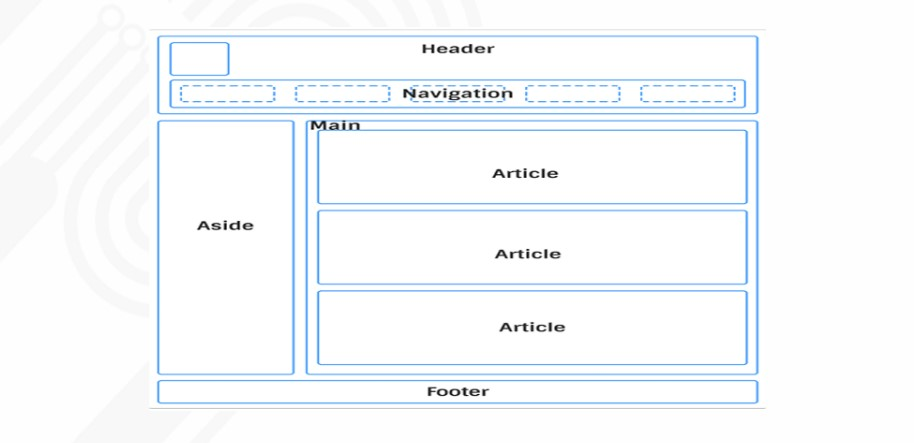
📱 Media Queries
🔹 تعريف Media Queries :
Media Queries are a feature in CSS used to apply different styles depending on the device’s characteristics, such as screen width, height, or orientation.
They help make your website responsive, meaning it looks good on all devices — phones, tablets, and computers.
🔹 التعريف بالعربي:
Media Query هي خاصية في CSS بتخليك تتحكم في شكل وتصميم الموقع حسب نوع الجهاز أو حجم الشاشة،
زي مثلاً إنك تغيّر شكل الموقع في الموبايل عن الكمبيوتر.
وده اللي بنسميه تصميم متجاوب (Responsive Design).
🔹 الفائدة:
- تخلي الموقع مناسب لكل الشاشات (موبايل - تابلت - كمبيوتر).
- تحسن تجربة المستخدم وتمنع التمرير الأفقي.
- تساعد في تحسين SEO لأن جوجل بيفضّل المواقع المتجاوبة.
مثال :
@media (max-width: 768px) {
body {
background-color: lightblue;
}
}
@media (min-width: 769px) {
body {
background-color: lightgreen;
}
}
🔹 الشرح بالعربي:
في المثال ده، لما يكون عرض الشاشة أقل من 768px (يعني في الموبايل)، الخلفية هتبقى فاتحة زرقا.
لكن لما تكون الشاشة أكبر (زي اللاب أو الكمبيوتر)، الخلفية هتبقى فاتحة خضرا.
يعني الموقع بيتغير حسب حجم الجهاز — وده هو هدف الـ Media Query.
📱 Media Queries
🔹 كيف تعمل الـ Media Queries:
الـ Media Query بتشتغل عن طريق اختبار خصائص الجهاز اللي المستخدم فاتح منه الموقع،
زي مثلاً: عرض الشاشة (width)، أو الارتفاع (height)، أو حتى اتجاه الشاشة (orientation).
لو الشرط اتحقق، المتصفح بيطبّق الأكواد اللي جواها.
🔹 الصيغة العامة (General Syntax):
@media (شرط معين) {
/* CSS Styles هنا */
}
🔹 أمثلة على أنواع الشروط:
- (max-width: 600px) → يطبق التنسيق لما يكون عرض الشاشة أقل من 600px (موبايل مثلاً).
- (min-width: 768px) → يطبق التنسيق لما يكون العرض أكبر من أو يساوي 768px.
- (orientation: landscape) → يطبق التنسيق لما تكون الشاشة بالوضع الأفقي.
- (orientation: portrait) → يطبق التنسيق لما تكون الشاشة بالوضع العمودي.
🔹 مثال عملي متكامل:
body {
background-color: white;
}
/* للموبايل */
@media (max-width: 600px) {
body {
background-color: lightcoral;
}
}
/* للتابلت */
@media (min-width: 601px) and (max-width: 1024px) {
body {
background-color: lightgoldenrodyellow;
}
}
/* للكمبيوتر */
@media (min-width: 1025px) {
body {
background-color: lightgreen;
}
}
🔹 التوضيح بالعربي:
في المثال ده، اللون بيتغير حسب الجهاز:
- موبايل: خلفية حمراء فاتحة (lightcoral).
- تابلت: خلفية صفراء فاتحة.
- كمبيوتر: خلفية خضراء فاتحة.
وده مثال واضح إزاي نستخدم Media Queries علشان نخلّي الموقع متجاوب مع كل الأجهزة.
🔹 ملاحظات مهمة:
- من الأفضل تبدأ تنسّق موقعك للشاشات الصغيرة (Mobile First) ثم تكبر باستخدام min-width.
- ممكن تدمج أكثر من شرط باستخدام and، not، أو only.
- تقدر تستخدم Media Queries كمان في print علشان تتحكم في شكل الصفحة أثناء الطباعة.
🔹 مثال على Media Query للطباعة:
@media print {
body {
background: white;
color: black;
font-size: 14pt;
}
}
الكود ده بيغيّر تنسيق الصفحة لما المستخدم يضغط Ctrl + P للطباعة.
نهاية Lesson 5
بالتوفيق ليكوا جميعًا
CSS Flexbox
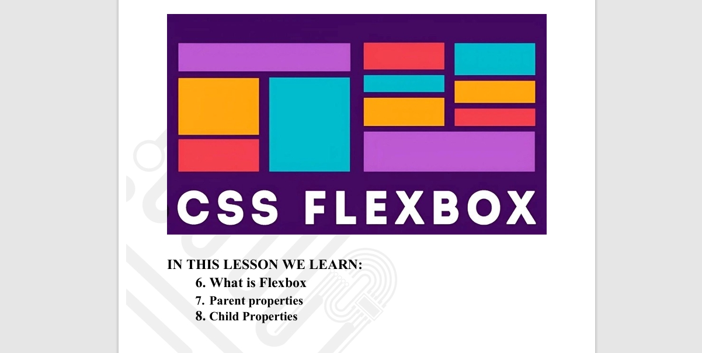
🔹 Definition (English):
Flexbox (Flexible Box Layout) is a CSS layout system that helps you easily align, distribute, and arrange elements inside a container — even when their sizes are unknown or dynamic.
It allows elements to automatically adjust their width, height, and order to fit the available space.
🔹 التعريف بالعربي:
Flexbox هو نظام ترتيب في CSS بيسهّل عليك تنسيق العناصر داخل الحاوية (container).
بيسمحلك تتحكم في اتجاه العناصر، وتوزيع المسافات، والمحاذاة، وتكبير أو تصغير العناصر تلقائيًا حسب حجم الشاشة.
🔹 Structure Example:
<div class="container">
<div class="box">Box 1</div>
<div class="box">Box 2</div>
<div class="box">Box 3</div>
</div>
🔹 Basic CSS Example:
.container {
display: flex;
background-color: #f1f1f1;
}
.box {
background-color: #4CAF50;
color: white;
padding: 20px;
margin: 10px;
}
الكود ده بيخلي العناصر جوّه الـ container تظهر جنب بعض بشكل أفقي بدل ما تكون تحت بعض.
🔹 Main Flexbox Properties:
- display: flex; — makes the container a flex container.
- flex-direction: defines the direction of items (row, row-reverse, column, column-reverse).
- justify-content: controls horizontal alignment (start, center, space-between, space-around, space-evenly).
- align-items: controls vertical alignment (start, center, end, stretch).
- flex-wrap: allows items to move to the next line if they don’t fit.
- align-content: controls space between rows when wrapping.
ما هو Flexbox ؟
Flexbox طريقة في CSS تساعدنا نرتّب العناصر داخل الصندوق (container) بسهولة،
يعني نقدر نخليهم جنب بعض أو فوق بعض، ونقدر نتحكم في أماكنهم بسهولة جدًا.
أهم خصائص Flexbox:
-
display: flex; "بديها للأب "
تجعل العنصر الرئيسي (الأب) صندوق مرن يحتوي على عناصر داخلية تتحرك بسهولة.
.container {
display: flex;
}
-
flex-direction:
تحدد اتجاه العناصر داخل الصندوق.
- row → (default) من اليسار إلى اليمين
- row-reverse → من اليمين إلى اليسار
- column → من الأعلى إلى الأسفل
- column-reverse → من الأسفل إلى الأعلى
.container {
display: flex;
flex-direction: row;
}
-
justify-content:
تتحكم في مكان العناصر أفقيًا (يمين أو يسار أو في المنتصف).
- flex-start → (default)تبدأ من اليسار
- flex-end → في اليمين
- center → في المنتصف
- space-between → مسافات متساوية بين العناصر
- space-around → مسافات بين العناصر وعلى الأطراف
.container {
justify-content: center;
justify-content: flex-start;
justify-content: flex-end;
}
-
align-items:
تتحكم في مكان العناصر عموديًا (أعلى أو أسفل أو في المنتصف).
- flex-start → فوق
- flex-end → تحت
- center → في النص
- stretch → تمتد لتملأ الطول
.container {
align-items: center;
}
-
عندما نستخدم Flexbox، أحيانًا بيكون عندنا عناصر كثيرة في صف واحد.
إذا لم تكن هناك مساحة كافية، فبشكل طبيعي حتى تدخل كلها في نفس السطر.
هنا يأتي دور flex-wrap!
🔸 القيم الممكنة:
- nowrap → كل العناصر تبقى في نفس السطر حتى لو خرجت خارج الصندوق. حتى لو مفي مساحه العناصر مش هتنزل سطر جديد (DEFAULT)
- wrap → تجعل العناصر تنزل إلى سطر جديد عندما لا يكون هناك مساحة.
- wrap-reverse → مثل wrap، لكن الصفوف الجديدة تظهر من الأعلى للأسفل بالعكس.
.container {
flex-wrap: wrap;
}
-
align-content:
تستخدم فقط عندما يكون لدينا أكثر من صف (باستخدام wrap)،
وهي تتحكم في المسافة بين الصفوف.
.container {
flex-wrap: wrap;
align-content: space-between;
}
مثال بسيط:
.container {
display: flex;
justify-content: center;
align-items: center;
gap: 10px;
}
.item {
background-color: lightblue;
padding: 20px;
}
🔹 مثال في الصفحة:
النتيجة: 3 مربعات لونها أزرق فاتح، في المنتصف تمامًا — بجانب بعض.
🔹 مثال عملي شامل:
.container {
display: flex;
flex-direction: row;
justify-content: space-between;
align-items: center;
background-color: lightblue;
padding: 20px;
flex-wrap: wrap;
}
.box {
background-color: steelblue;
color: white;
padding: 20px;
flex: 1;
margin: 10px;
text-align: center;
}
🔹 شرح المثال بالعربي:
- كل العناصر (Box 1, Box 2, Box 3) بقت في صف واحد.
- تم توزيعهم بالتساوي باستخدام justify-content: space-between;
- كل عنصر بياخد نفس المساحة تلقائيًا بفضل flex: 1;
- لما الشاشة تصغر، العناصر بتنزل سطر جديد بسبب flex-wrap: wrap;
🔹 Flex Direction Examples:
/* افقي */
.container { flex-direction: row; }
بتخلي العناصر على الشمال مترتبين الترتيب الطبيعي بتاع الاتش تي ام ال
/* افقي عكسي */
.container { flex-direction: row-reverse; }
بتودي العناصر اقصى اليمين وتعكس ترتيبهم
/* عمودي */
.container { flex-direction: column; }
بتغير شكل العناصر من صف إلى عمود
/* عمودي عكسي */
.container { flex-direction: column-reverse; }
بتغير شكل العناصر من صف إلى عمود
معكوس
🔹 justify-content Examples:
.container {
display: flex;
justify-content: center; /* العناصر في المنتصف */
/* أو استخدم:
flex-start | flex-end | space-between | space-around | space-evenly */
}
🔹 align-items Examples:
.container {
display: flex;
align-items: center; /* العناصر في المنتصف عموديًا */
/* أو استخدم:
flex-start | flex-end | stretch | baseline */
}
🔹 الفرق بين justify-content و align-items:
- justify-content بيتحكم في محاذاة العناصر أفقياً (يمين – شمال).
- align-items بيتحكم في محاذاتهم عمودياً (فوق – تحت).
ولو استخدمت flex-direction: column; بيتعكس الاتجاه.
🔹 مثال توضيحي بسيط (عربي + إنجليزي):
<div style="display:flex; justify-content:center; align-items:center; height:200px; background:lightgray;">
<div style="background:tomato; color:white; padding:20px;">
Hello Flexbox 👋 / أهلاً Flexbox
</div>
</div>
النتيجة: المربع الأحمر بيظهر في منتصف الصفحة أفقيًا وعموديًا، وده أقوى ميزة في الـ Flexbox.
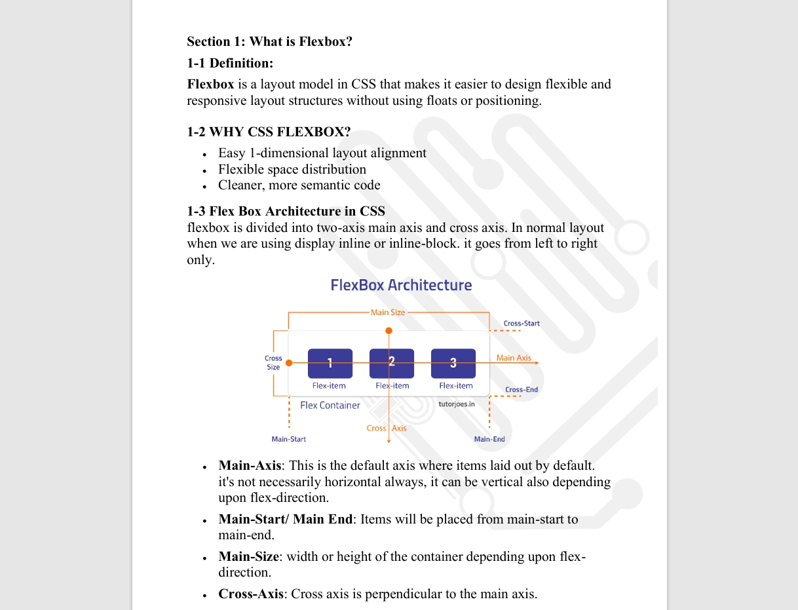
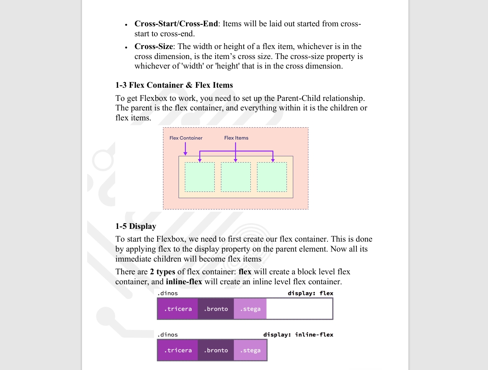
نهاية شرح Flexbox — جرّب الأكواد بنفسك متكسلش!
شرح سهل اوي
1) Main-Axis (المحور الرئيسي)
تخيل الصندوق (container) فيه صف أو عمود من الألعاب. المحور الرئيسي هو المكان اللي الألعاب بتمشي عليه — ممكن يكون أفقي (صف) أو عمودي (عمود) حسب اللي انت تختاره.
/* example: main axis is horizontal (row) */
.container { display:flex; flex-direction:row; }
2) Main-Start / Main-End (فين البداية والنهاية على المحور الرئيسي)
لو المحور أفقي، الألعاب بتبدأ من اليمين أو الشمال — اللى هو main-start لحد main-end. ده معناه المكان اللي العناصر بتتحط منه لحد ما تخلص.
3) Main-Size (حجم المحور الرئيسي)
ده المقاس اللي المتصفح بيعده على المحور الرئيسي — يعني العرض لو المحور أفقي، أو الطول لو المحور عمودي.
4) Cross-Axis (المحور المتقاطع)
ده المحور اللي عمودي على المحور الرئيسي. يعني لو عندنا صف (أفقي) فالمحور المتقاطع يكون رأسي، والعكس صحيح.
/* row -> main is horizontal, cross is vertical */
.container { display:flex; flex-direction:row; }
/* column -> main is vertical, cross is horizontal */
.container { display:flex; flex-direction:column; }
5) Cross-Start / Cross-End
زي ال-main start/end لكن على المحور التاني — المكان اللي العناصر بتبدأ منه وتنتهي على المحور المتقاطع.
6) Cross-Size (حجم العنصر على المحور المتقاطع)
يعني عرض أو ارتفاع العنصر حسب اللي هو على المحور المتقاطع. لو المحور المتقاطع هو العرض يبقى الـ cross-size = width، ولو الطول يبقى = height.
1-3) Flex Container و Flex Items (الأب والولاد)
علشان Flexbox يشتغل لازم يكون في أب (parent) وولاد (children). الأب بنسميه flex container، والولاد دي بتكون flex items.
<div class="container">
<div class="item">A</div>
<div class="item">B</div>
<div class="item">C</div>
</div>
/* CSS */
.container { display:flex; } /* كده الأب بقى flex container */
.item { padding:10px; background:lightblue; margin:5px; }
Display
علشان تبدأ Flexbox لازم تكتب display:flex على الأب. فيه كمان inline-flex لو عايز الأب يتصرف كعنصر سطري بدل بلوك.
.container { display:flex; } /* بلوك فليكس */
.container-inline { display:inline-flex; } /* سطري فليكس */
Section 2: خصائص الوالد (Parent properties)
2-1) flex-direction (تحديد المحور الرئيسي)
القيمة اللي تختارها بتحدد المحور الرئيسي:
- row (الافتراضي): العناصر على صف من اليسار لليمين
- row-reverse: العناصر على صف من اليمين لليسار
- column: العناصر في عمود من فوق لتحت
- column-reverse: العناصر من تحت لفوق
.container { display:flex; flex-direction:row; } /* row example */
2-2-1) justify-content (محور الـ main - توزيع على المحور الرئيسي)
الخاصية دي بتحدد ازاي العناصر تتوزع على المحور الرئيسي (يبقى صف أو عمود حسب flex-direction).
- flex-start: العناصر تبدأ من أول المكان
- flex-end: العناصر تروح لنهاية المكان
- center: العناصر في النص / المنتصف
- space-between: تفرق المسافات بين العناصر بالتساوي (من غير مسافة على الأطراف)
- space-around: نفس الفكرة بس فيها مسافة على الأطراف
- space-evenly: مسافات متساوية تمامًا حوالي العناصر كلها
.container { display:flex; justify-content:space-between; }
ملاحظة: لما يكون المحور الرئيسي عمودي (flex-direction: column) فـ justify-content بيأثر في الاتجاه الرأسي بدل الأفقي.
Distribution / Align (محور الـ cross)
الخاصية اللي بتوزع العناصر على المحور التاني (اللي متعامد مع الرئيسي) اسمها align-items.
- stretch (الافتراضي): العناصر تتمدد على كامل المحور التاني
- flex-start: تبدأ من فوق (أو من جهة البداية)
- flex-end: تنتهي عند النهاية
- center: في نص المحور
- baseline: تتراص حسب سطر النص الأساسي (مفيد للنصوص)
.container { display:flex; align-items:center; }
ملاحظة: لو direction column، الـ align-items يتحكم في المحور اللي بقى أفقي.
flex-wrap
لما العناصر تبقى كتير ومش فاضية المساحة، flex-wrap بتقولهم ينزلوا سطر جديد ولا يفضلوا في سطر واحد.
- nowrap (افتراضي): كل العناصر تبقى في سطر واحد (ممكن تخرج بره)
- wrap: العناصر تنزل لسطر جديد لما المساحة تقل
- wrap-reverse: نفس wrap لكن الصفوف الجديدة بتيجي بالعكس
.container { display:flex; flex-wrap:wrap; }
align-content
خاصية بتتحكم في المسافات بين الصفوف لما العناصر تبقى على أكتر من صف (يعني بعد ما نستخدم wrap).
.container {
flex-wrap:wrap;
align-content:space-between;
}
أمثلة عملية قصيرة (تجريبية)
أ) مثال صف بسيط مع justify-content
.container {
display:flex;
justify-content:space-between;
}
.item { width:80px; height:50px; background:lightcoral; }
ب) مثال wrap عشان العناصر تنزل لسطر جديد
.container {
display:flex;
flex-wrap:wrap;
gap:10px;
max-width:360px;
border:2px dashed #ccc;
}
.item { width:120px; height:60px; background:lightgreen; }
شوف؟ العنصر الرابع نزل تحت لما المساحة ماكنتش كفاية — ده شغل flex-wrap: wrap;
نصايح أخيرة للأطفال (مختصر)
- فكر في container كصندوق كبير والأشياء جواه لعب.
- المحور الرئيسي (main-axis) هو طريق الحركة — يقدر يكون أفقي أو عمودي.
- لو المساحة خلصت، استخدم
flex-wrap علشان الألعاب تنزل سطر جديد.
- لو عايز حاجة في النص استخدم
justify-content:center وalign-items:center.
🔹 1. خاصية align-content
الخاصية دي بتتحكم في **المسافات بين الصفوف** لما العناصر بتلف على كذا سطر (يعني لما نستخدم flex-wrap).
لو العناصر نزلت تحت بعضها، align-content بتظبطهم ازاي يكونوا متوزعين.
- stretch: بتخلي الصفوف تتمدد وتملأ المساحة كلها (دي القيمة الافتراضية).
- flex-start: بتخلي الصفوف فوق.
- flex-end: بتخلي الصفوف تحت.
- center: بتحط الصفوف في نص الكونتينر.
- space-between: بتحط أول صف فوق وآخر صف تحت والباقي في النص بمسافات متساوية.
- space-around: بتحط مسافة متساوية حوالين كل صف.
.container {
display: flex;
flex-wrap: wrap;
align-content: space-between;
}
🔹 2. خاصية align-self
الخاصية دي بتتحكم في عنصر واحد بس من العناصر اللي جوّه الفليكس.
يعني لو عندك 3 عناصر وكلهم متوسّطين فوق، تقدر تعمل لعنصر واحد بس يكون في النص أو تحت باستخدام align-self.
- auto: بياخد القيمة من align-items (القيمة العامة).
- flex-start: العنصر فوق.
- flex-end: العنصر تحت.
- center: العنصر في النص.
- stretch: العنصر يتمدد ويملأ المساحة.
.item {
align-self: flex-end;
}
🔹 3. خاصية order
دي بتتحكم في **ترتيب العناصر** جوه الفليكس.
يعني حتى لو عنصر مكتوب قبل التاني في الكود، ممكن تخليه يظهر بعده أو قبله بتغيير الرقم بتاع order.
- الرقم الأصغر بيخلي العنصر يطلع قبل.
- الرقم الأكبر بيخليه ييجي بعد.
.item1 { order: 2; }
.item2 { order: 1; }
.item3 { order: 3; }
في المثال ده، العنصر التاني هيظهر الأول 👀
🔹 4. خاصية flex-grow
الخاصية دي بتقول للعنصر: "كبر وخد مساحة زيادة" لما في مساحة فاضية في الكونتينر.
كل ما الرقم يزيد، العنصر بياخد مساحة أكبر.
- 0: (القيمة الافتراضية) العنصر مش هيكبر.
- 1: العنصر هيكبر وياخد مساحة مساوية لأي عنصر تاني ليه نفس القيمة.
.item1 { flex-grow: 1; }
.item2 { flex-grow: 2; } /* هيكبر أكتر */
🔹 5. خاصية flex-shrink
دي عكس flex-grow
بتتحكم في **تصغير العناصر** لما المساحة تضيق.
لو الرقم كبير، العنصر هيصغر أكتر لما الكونتينر يديق.
- 0: العنصر مش هيصغر خالص.
- 1: العنصر هيصغر بنسبة عادية.
- 2: العنصر هيصغر أكتر من غيره.
.item1 { flex-shrink: 1; }
.item2 { flex-shrink: 2; }
🔹 6. خاصية flex-basis
الخاصية دي بتحدد **الحجم المبدأي** للعنصر قبل ما flex-grow أو flex-shrink يشتغلوا.
يعني زي ما تقول “ابدأ من الحجم ده”، وبعد كده يتغير حسب المساحة.
.item {
flex-basis: 200px;
}
يعني العنصر هيبدأ عرضه 200px وبعدها ممكن يكبر أو يصغر حسب باقي الخصائص.
🔹 7. خاصية flex (الاختصار)
دي اختصار للـ 3 خصائص اللي فوق: flex-grow و flex-shrink و flex-basis
الشكل العام بيكون كده:
.item {
flex: 1 1 200px; /* grow shrink basis */
}
يعني: يكبر بنسبة 1، يصغر بنسبة 1، ويبدأ من 200px
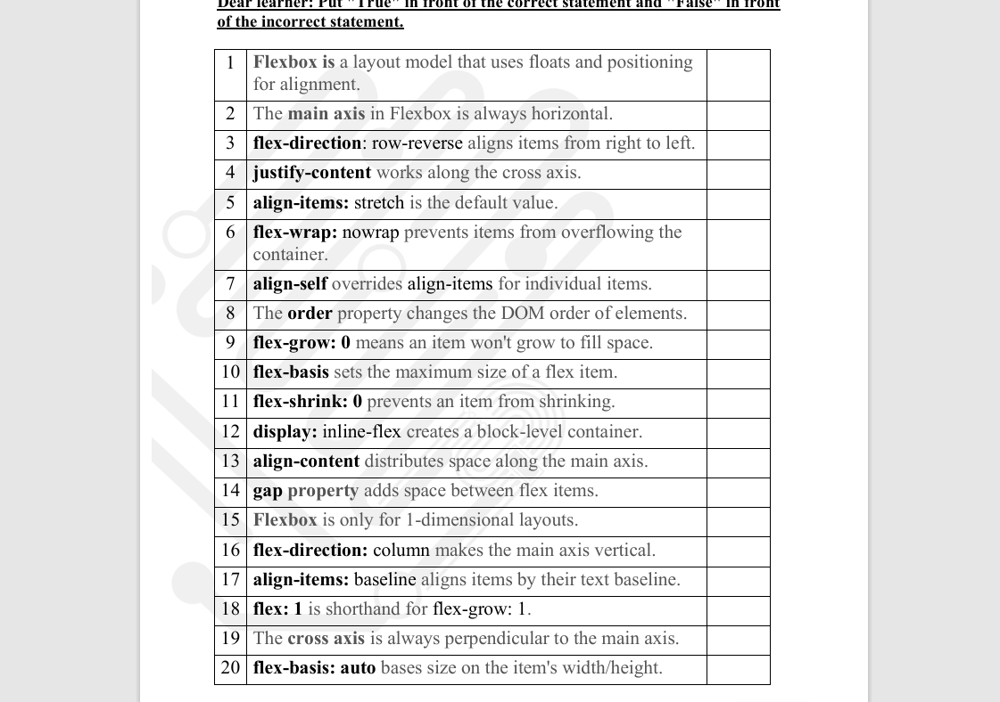
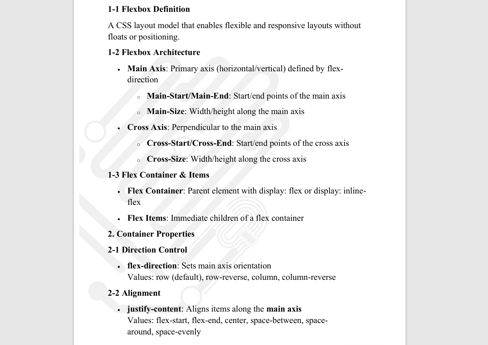
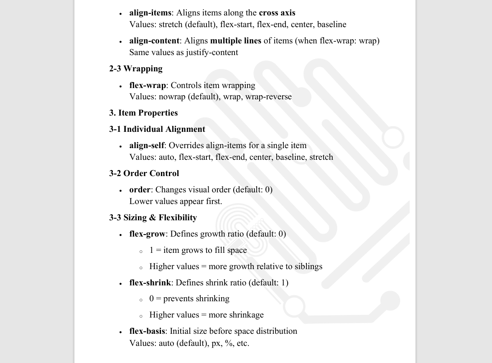
ملحوظة مهمة:
Flexbox بيساعدنا نخلي التصميم متجاوب وسهل التوزيع للعناصر على الصفحة،
وبيخلي كل حاجة تتظبط من غير ما نحسب المسافات بإيدينا
🎯 CSS Grid (شرح كامل)
🔹 What is CSS Grid?
English: CSS Grid is a powerful layout system in CSS that allows developers to create complex, responsive web designs easily.
It’s a two-dimensional system that handles both rows and columns. Unlike Flexbox, which mainly works in one direction.
Arabic:
الـ CSS Grid هو نظام قوي لتقسيم وتنسيق الصفحة.
بيساعدنا نعمل تصميم منظم وسهل سواء في الاتجاه الأفقي (الأعمدة) أو العمودي (الصفوف).
وده اللي بيميزه عن Flexbox اللي بيشتغل في اتجاه واحد بس.
💡 Solving Float Problems using Grid
English:
Before Grid, developers used float to arrange elements, which caused issues like collapsing parents and wrapping problems.
Grid solves these issues — no more clearfix hacks, no weird wrapping.
Arabic:
زمان قبل ما يظهر الـ Grid، المصممين كانوا بيستخدموا خاصية float لترتيب العناصر.
بس ده كان بيعمل مشاكل كتير زي إن العنصر الأب ينهار أو العناصر تتلف بشكل غلط.
الـ Grid حل كل ده بسهولة .
Difference between display: grid and display: inline-grid
- display: grid; → Makes a block-level grid (takes full width).
- display: inline-grid; → Makes an inline grid (takes only needed width).
Arabic:
الاتنين بيحولوا العنصر لـ Grid، بس الفرق:
- grid: بياخد عرض الصفحة كله.
- inline-grid: بياخد المساحة اللي هو محتاجها بس.
CSS Grid Anatomy (أجزاء شبكة الـ Grid)
- Grid Lines: الخطوط اللي بتقسم الأعمدة والصفوف.
- Grid Cell: خلية واحدة (مربع صغير).
- Grid Area: مجموعة خلايا متجمعة مع بعض.
- Grid Track (Column): عمود في الشبكة.
- Grid Track (Row): صف في الشبكة.
- Axes:
- Inline axis = الاتجاه الأفقي.
- Block axis = الاتجاه العمودي.

grid-template-columns
English:
This property defines how many columns your grid will have and how wide each one is.
Arabic:
الخاصية دي بتحدد عدد الأعمدة في الشبكة والعرض بتاع كل عمود.
.container {
display: grid;
grid-template-columns: 100px 150px 200px;
gap: 10px;
}
ده معناه إن عندنا 3 أعمدة: الأول 100px، التاني 150px، التالت 200px، وبينهم 10px مسافة.
🔹 Using Auto, fr, and repeat()
- auto: يخلي المتصفح يحدد عرض العمود حسب المحتوى.
- fr (Fraction): جزء من المساحة الفاضية، مثال:
1fr 2fr يعني التاني ضعف الأول.
- repeat(): تستخدم لتكرار الأعمدة بسهولة، مثال:
repeat(3, 1fr) يعني 3 أعمدة متساوية.
.container {
display: grid;
grid-template-columns: repeat(3, 1fr);
gap: 10px;
}
🔹 Using minmax(), auto-fit, auto-fill
English:
The minmax() function defines a column with a minimum and maximum size.
auto-fit and auto-fill make grids flexible for responsive designs.
Arabic:
minmax() بتحدد أقل وأكبر عرض للعمود، و auto-fit و auto-fill بيخلوا التصميم متجاوب.
.container {
display: grid;
grid-template-columns: repeat(auto-fit, minmax(200px, 1fr));
}
🔹 grid-template-rows & grid-auto-rows
English:
These properties control the height of rows. grid-template-rows sets fixed rows,
while grid-auto-rows applies to new rows created automatically.
Arabic:
بتحدد ارتفاع الصفوف، الأولى للصفوف اللي انت حددتها بنفسك، والتانية للصفوف اللي بتتضاف تلقائيًا.
.container {
grid-template-rows: 100px 150px;
grid-auto-rows: 80px;
}
justify-content & align-content
English:
These properties align the entire grid inside its container.
justify-content controls horizontal alignment,
and align-content controls vertical alignment.
Arabic:
الخصائص دي بتظبط مكان الشبكة كلها جوه الكونتينر.
الأولى بتحركها يمين وشمال، والتانية فوق وتحت.
- flex-start: فوق أو بداية الاتجاه
- center: في النص
- flex-end: في الآخر
- space-between: فراغ متساوي بين العناصر
- space-around: فراغ حوالين كل عنصر
- space-evenly: مسافات متساوية تمامًا
.container {
display: grid;
justify-content: center;
align-content: space-between;
}
🌟 ملحوظة:
الخصائص دي بتشتغل لما يكون في مساحة فاضية في الكونتينر.
لو كل الأعمدة والصفوف واخدين المساحة كلها، مش هتشوف تأثيرهم.
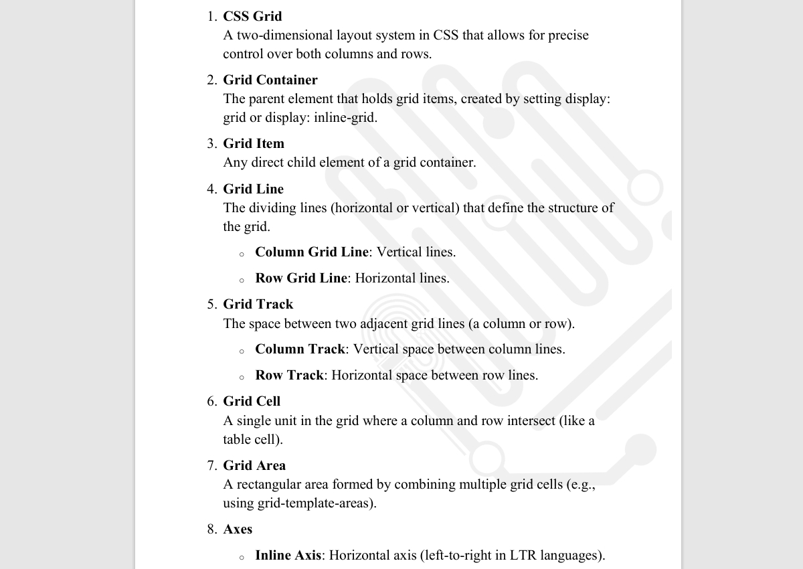
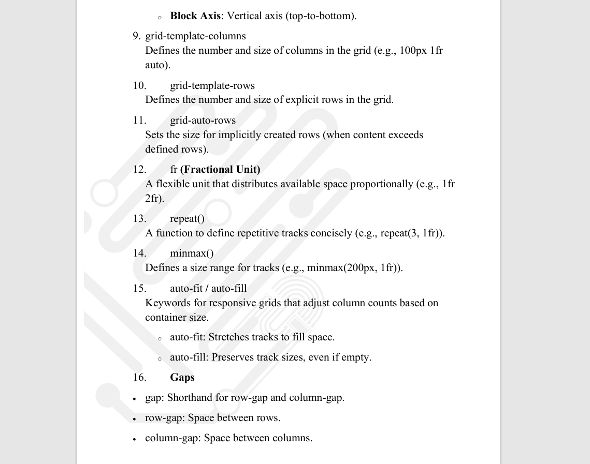
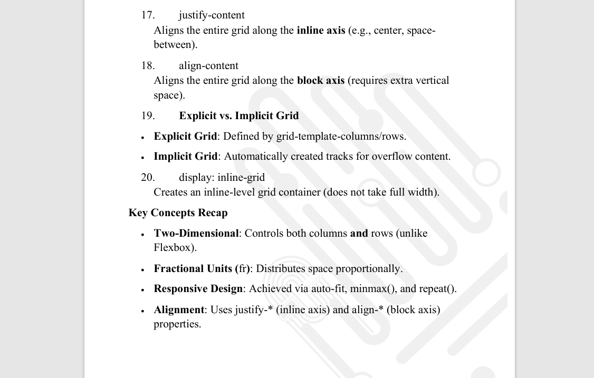
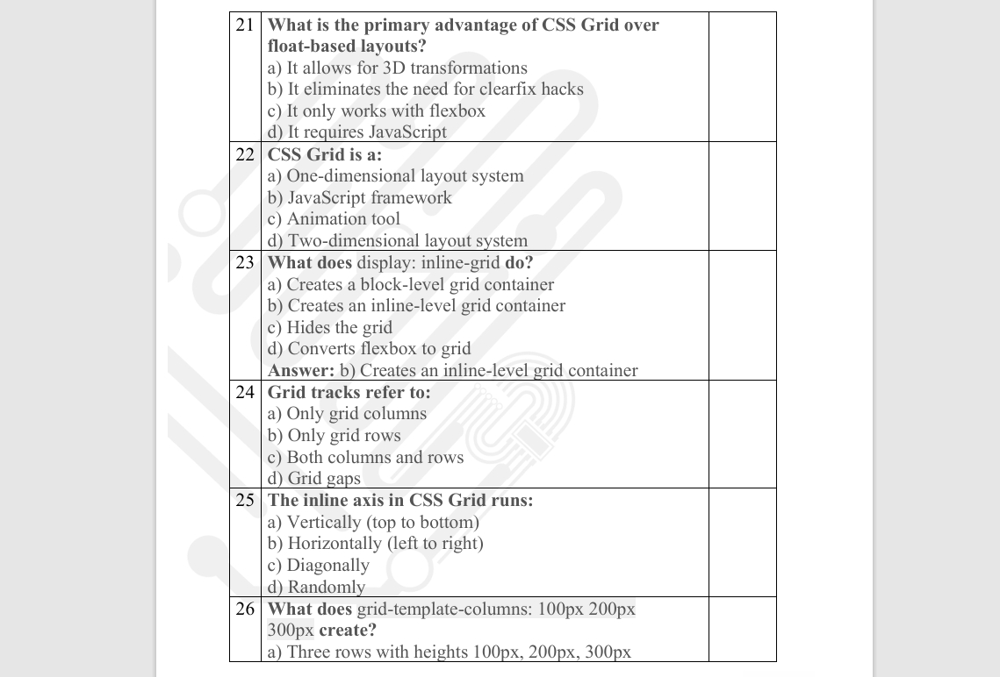
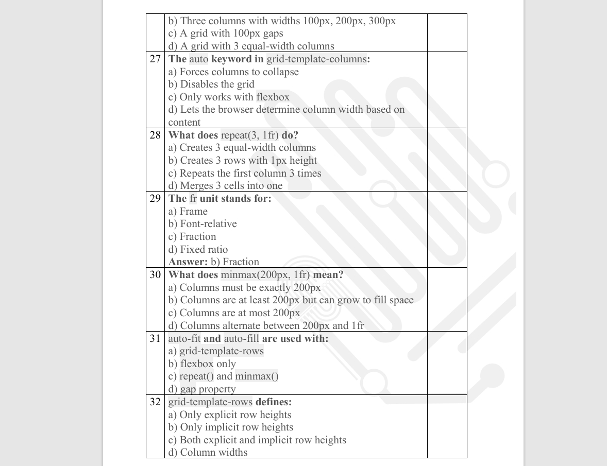
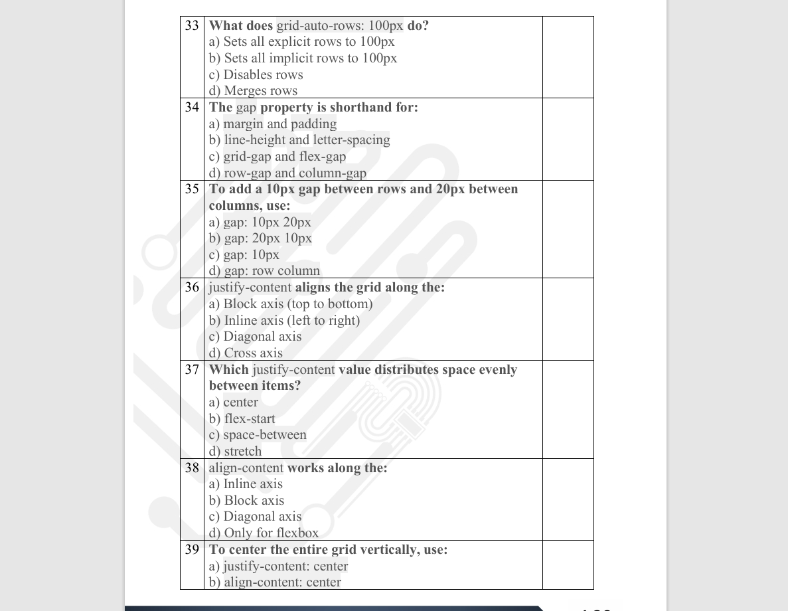
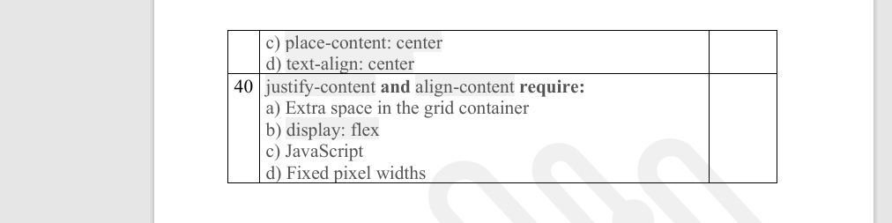